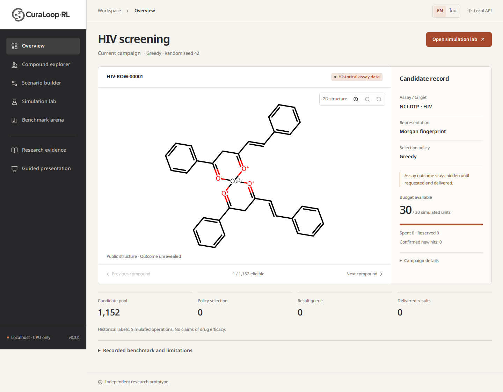
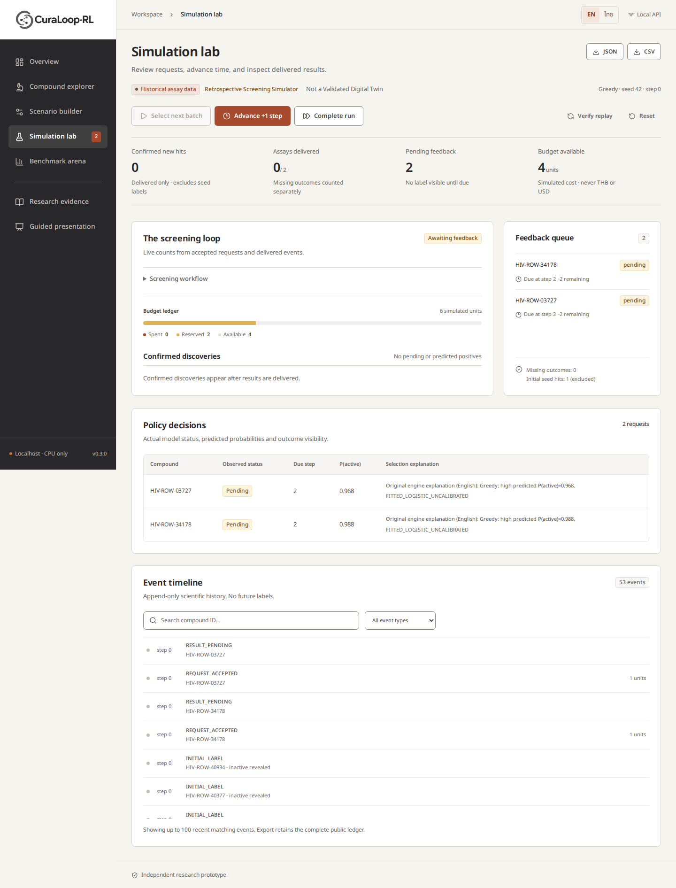
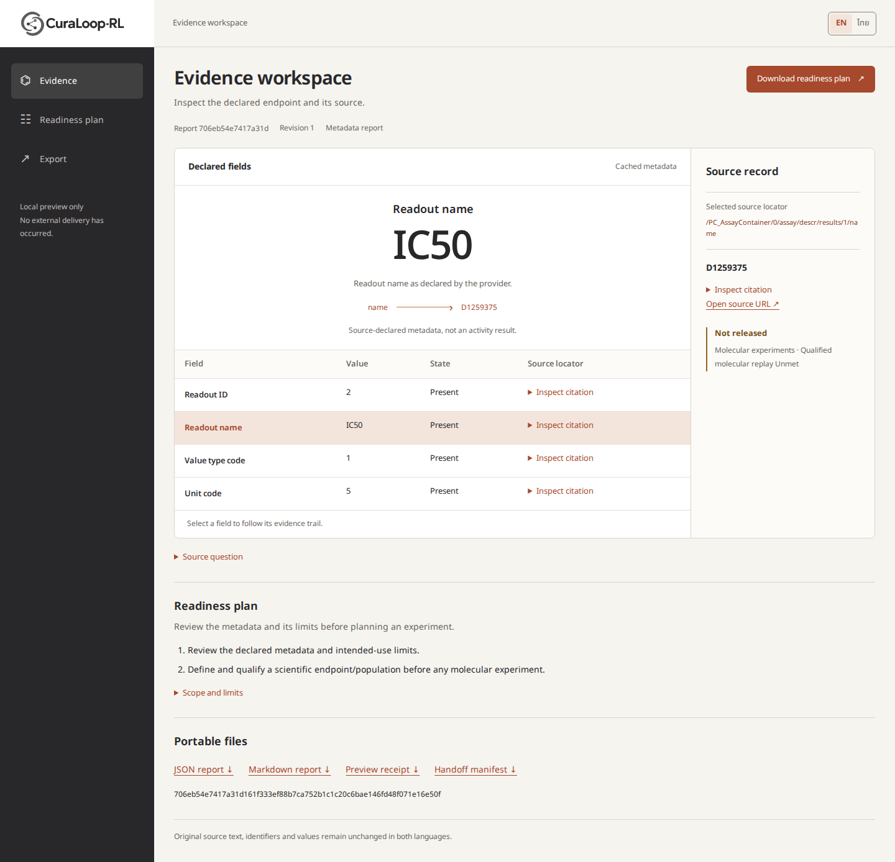
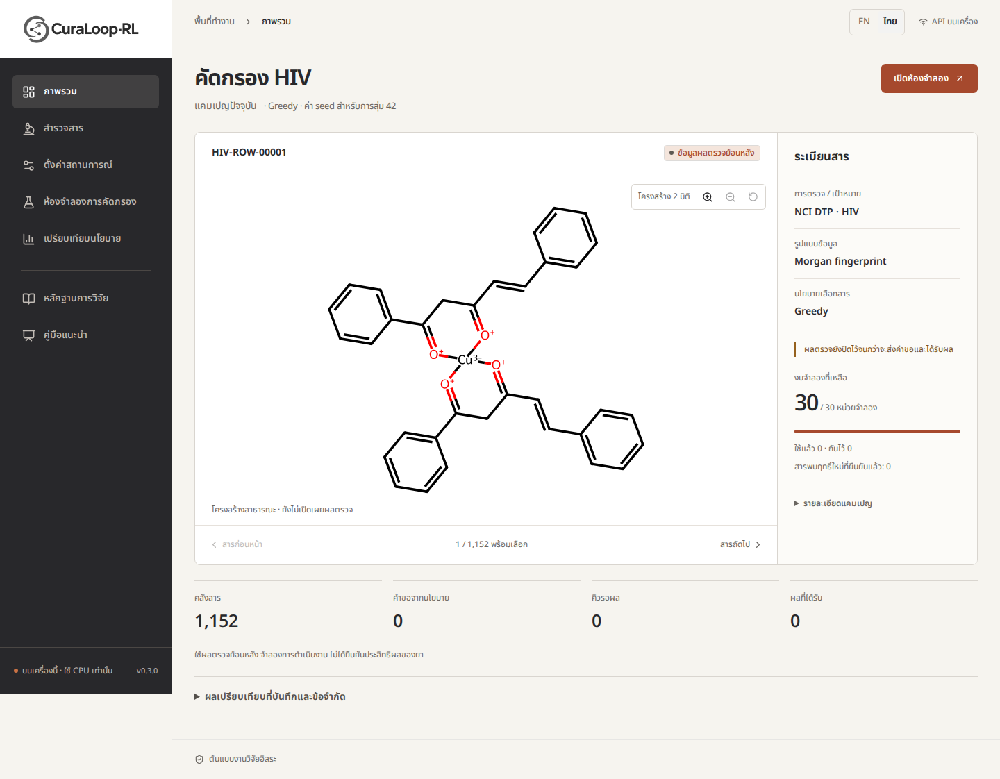

Inspect the candidate.
Explore a real historical structure and its public record.
Outcomes remain hidden until requested and delivered.

Follow the queue.
Requests reserve simulated budget. Advance time explicitly to receive feedback.
Pending predictions are never counted as confirmed hits.

Trace the source.
Inspect declared fields, original locators and report identity.
Cached metadata is not a molecular activity result or a released experiment.
The same campaign. In either language.
